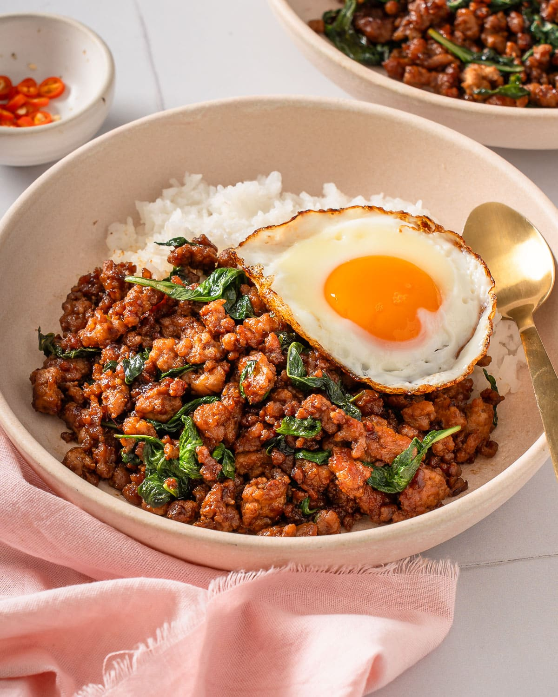

Pad Kra Pao

Description
Here is a super special dish. It is far from perfect and definitely
going to look goofy or just plain stupid for including in this list.
But, I am including because the most important person in my life once
made this and it was the warmest food I got to experience admist of
the chaos I was going through that year-2024. A thai dish that is super
simple, almost beggar-type food, yet is just as flavorful as any Asian
dish that we all know for!
Ingredients
For the Pad Kra Pao:
- 300g ground chicken, pork, or beef
- 4-5 cloves garlic, minced
- 2-3 Thai bird’s eye chilies, chopped (adjust to taste)
- 2 tablespoons vegetable oil
- 1 tablespoon oyster sauce
- 1 tablespoon soy sauce
- 1 teaspoon dark soy sauce (optional, for color)
- 1 teaspoon fish sauce
- 1 teaspoon sugar
- 1 handful fresh Thai holy basil leaves (if unavailable, Thai basil can work as a substitute)
For the Sunny-Side-Up Egg:
- 2 eggs
- Vegetable oil (enough for shallow frying)
To Serve:
Steps
- Mince garlic and chilies together to form a rough paste.
- Wash and pick the basil leaves, discarding the stems.
- Heat 2 tablespoons of vegetable oil in a wok or frying pan over medium-high heat.
- Add the garlic and chili paste, stirring quickly to release the aroma (about 30 seconds).
- Add the ground meat and stir-fry until fully cooked, breaking up clumps with your spatula.
- Add oyster sauce, soy sauce, fish sauce, dark soy sauce (if using), and sugar. Stir well to coat the meat.
- Toss in the basil leaves and stir just until they wilt. Remove from heat and set aside.
- Heat enough oil in a separate pan over medium-high heat to shallow fry.
- Crack an egg directly into the hot oil and fry until the edges are crispy and the yolk is still runny (about 1-2 minutes). Repeat for the second egg.
- Spoon the Pad Kra Pao over a plate of steamed jasmine rice and top with the crispy fried egg.